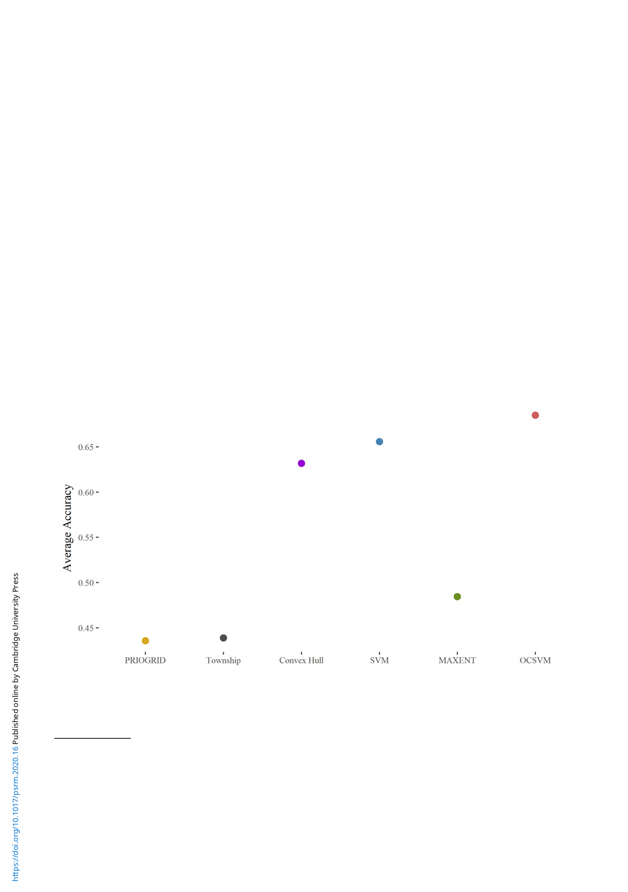

Political Science Research and Methods 107
one half of the affected villages, and the corresponding conflict zones are estimated. I calculate the
accuracies of the conflict zones by comparing them to the other half of the affected villages and one
half of the villages that were unaffected.20 The same exercise is done by replacing the groups. The
two-fold cross-validation is repeated 500 times (thus, 2 × 500 = 1, 000 simulation outputs). Finally,
the average accuracy is calculated.21 The other specifications are the same as those in the simulation
analyses.
As seen in Figure 5, the OCSVM exhibits the highest performance, indicating that the OCSVM
better reflects the reality of the Rohingya Crisis. Nonetheless, it should be noted that the perform-
ance is not very high in the absolute term; only about seven out of ten times, the OCSVM cor-
rectly distinguish affected and unaffected villages. This reflects the generic difficulties of one-class
classification. Thus, as mentioned above, the OCSVM should not be considered as substitutes for
detailed field-level knowledge. Having said that, however, the OCSVM marks improvement com-
pared to the extant methods; the OCSVM increases the probability of correct predictions by 0.25,
0.2, 0.05, and 0.03 compared to the PRIOGRID and polygon assignments, the MAXENT, the
convex hull, and the SVM respectively.
Although the SVM exhibits a performance similar to the OCSVM, the SVM’s accuracy varies
substantially across simulations. Indeed, the standard deviation of SVM’s accuracy is 0.065, which
is far larger than any of the other methods (the standard deviations of the other methods are
below 0.03). This is not surprising because the SVM relies on the random sampling of absence
data and hence is subject to additional noise. Next, even though the convex hull also exhibits a
Figure 5. Validation: performance comparison.
Note: The figure shows the results of the two-fold cross-validation tests. The vertical axis is average accuracy over 500 cross-validation
tests (thus 2 × 500 = 1000 simulations). The confidence intervals are very small and hence not reported.
these are often used in macro-level analysis. The goal of this paper is to develop a method for macro-level comparison, and
the analysis in this section attempts to validate the macro-level methods with micro-level data. Although it might be inter-
esting to use smaller grid cells or polygons, I do not evaluate these areal assignments. The reasons are (i) due to the sheer
sample size, they cannot be used in analysis with a large number of countries, (ii) there is no global dataset of village or
equivalent administrative polygons, and as a result (iii) to my best knowledge, there is no study that uses those fine-grained
units in a large number of countries.
20The other half of the unaffected villages are not used in order to maintain the ratio of the affected and unaffected villages.
21The confidence intervals are very small and hence not reported.